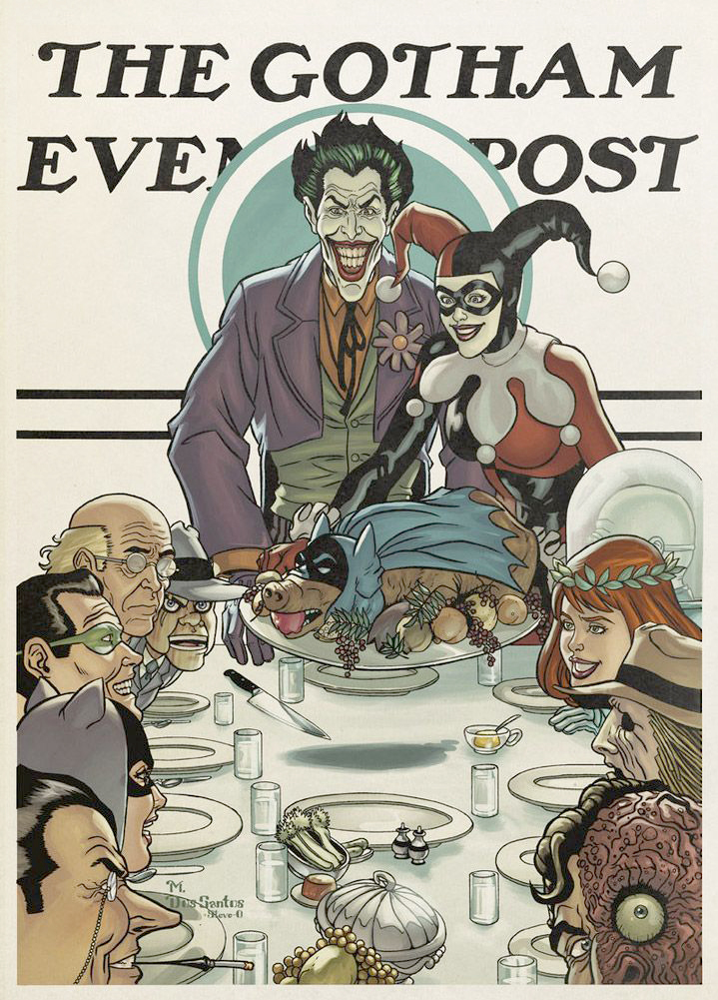

The true value of Norman Rockwell
Norman Percevel Rockwell was an American
illustrator, painter and authors
illustrator, painter and authors
He was Born in New York City on February 3 1894 and died at the age of 83 on November 8 1978.
At the age of 22 he had already created the first poster of the Saturday Evening Post which was the beginning of a 47 year relationship with the popular magazine. His work known to be a reflection and critic of the American culture.
Even though his work was loved by the public it was often dismissed because of the political messages behind his art. It is only now, more than a hundred years after
his birth that he achieved another level of recognition.
In 1943, inspired by President Franklin D Roosevelt he painted a series of posters called the Four Freedoms : Freedom of Speech, Freedom of Worship.
Freedom from want and Freedom from Fear which proved to be incredibly popular.
Furthermore Norman Rockwell was the first artist to portray women as employed, strong and muscular. His work was a complete opposition to the stereotype of women of the time since only women like blonde Betty Grable were portrayed and and were seen as “ideal”.
 In 1943, inspired by President Franklin D Roosevelt he painted a series of posters called the Four Freedoms : Freedom of Speech, Freedom of Worship.
Freedom from want and Freedom from Fear which proved to be incredibly popular.
His paintings raised in excess of 130millions towards the war effort
Furthermore Norman Rockwell was the first artist to portray women as employed, strong and muscular. His work was a complete opposition to the stereotype of women of the time since only women like blonde Betty Grable were portrayed and and were seen as “ideal”.